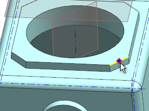
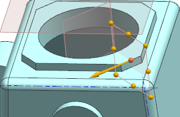
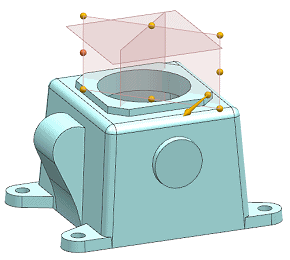

创建通过边中点的基准平面
|
设计意图 |
还需要使用另一个基准平面来从另一个方向分割气缸头的孔，您将使用另一种方法来创建第三个基准平面。 |
-
在选择条上，确保已激活中点
 捕捉。
捕捉。 -
在基准平面对话框中，确保类型是设置为自动判断。
-
当选择对象高亮显示时，选择倒斜角其中一条水平边的中点，如图所示。


-
使用基准平面大小手柄，增大基准平面大小，使之与另一个基准平面大小匹配。
-
点击应用。
创建的基准平面将通过选定的倒角边中点，并垂直于该边。
